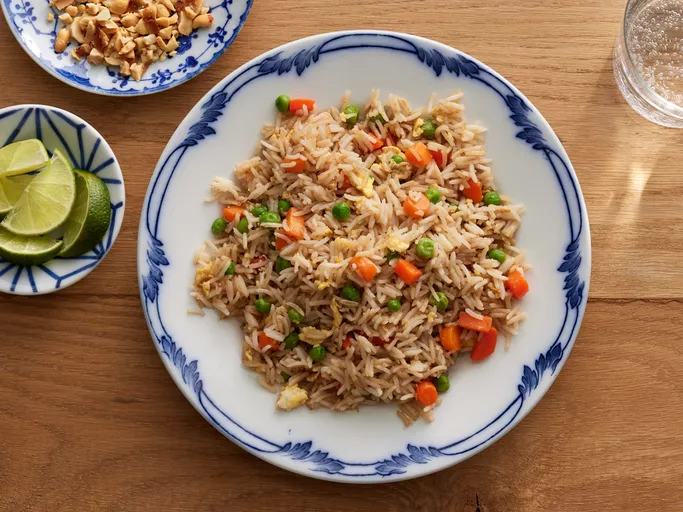

Description
Fried rice is the ultimate family-friendly dish that yields maximum flavor without fuss. Loaded with tender sauteed veggies and delicious bits of scrambled egg, this top-rated recipe makes it easy to recreate a takeout favorite from home in just 20 minutes.
Over a thousand home cooks agree — this simple, savory recipe is a winner. But what if you don't have a wok on hand? Learn the best methods for making fried rice at home, from a griddle to Instant Pot preparation.
Ingredients
- ⅔ cup chopped baby carrots
- ½ cup frozen green peas
- 2 tablespoons vegetable oil
- 1 clove garlic, minced, or to taste (Optional)
- 2 large eggs
- 3 cups leftover cooked and chilled white rice
- 1 tablespoon soy sauce, or more to taste
- 2 teaspoons sesame oil, or to taste
Steps to make fried rice
- Assemble ingredients.
- Place carrots in a small saucepan and cover with water. Bring to a low boil and cook for 3 to 5 minutes. Stir in peas, then immediately drain in a colander.
- Heat a wok over high heat. Pour in vegetable oil, then stir in carrots, peas, and garlic; cook for about 30 seconds. Add eggs; stir quickly to scramble eggs with vegetables.
- Stir in cooked rice. Add soy sauce and toss rice to coat. Drizzle with sesame oil and toss again.
- Serve hot and enjoy!